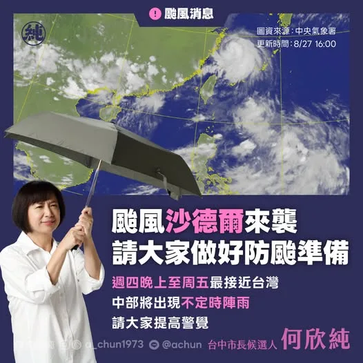

南台灣大淹水！高雄市議員怒批民進黨執政高雄淹水始終無法改善 〈 南台灣大淹水！高雄市議員怒批民進黨執政高雄淹水始終無法改善 〉本文來自於《 龍傳媒新聞 iNews Long 》。 颱風還沒來，南部已經連續淹水好幾天。高雄市議員陳美雅，直說高雄現在一下大雨，民眾就人心惶惶，晚上不敢睡覺..
Posts
南台灣大淹水！高雄市議員怒批民進黨執政高雄淹水始終無法改善 〈 南台灣大淹水！高雄市議員怒批民進黨執政高雄淹水始終無法改善 〉本文來自於《 龍傳媒新聞 iNews Long 》。 颱風還沒來，南部已經連續淹水好幾天。高雄市議員陳美雅，直說高雄現在一下大雨，民眾就人心惶惶，晚上不敢睡覺..
別讓政治口水延誤治水！陳亭妃力推防洪工程 明年汛期前到位！

Responding to User Complaints: Air Raid Drill Mobile Network Outage... Can Telecom Companies Prov...

治水六大行動 打造高雄防洪韌性城市 治水不能頭痛醫頭、腳痛醫腳，更不能單憑直覺，為了改善高雄水患問題，我央請李鴻源部長及多位專家學者細細檢視高雄的水患現況，並提出六大行動，要從問題診斷、流域治理、都市排水、防汛設施、智慧治水到民宅防洪，建立完整的防洪體系，讓高雄從「淹水後搶修」轉向「事前預警、主動調度、降低災害、快速復原」。 一、建立「高雄智慧水安全平台」 由市府層級統籌，整合水利、工務、都發、農業、交通、民政、環保等局處，並邀集中央水利機關、專家學者及地方代表，全面檢視高雄治水問題。 建立全高雄水系統的水工模型＋數位孿生＋即時監測，把雨量、河川水位、潮位、抽水站、閘門、滯洪池、箱涵等資料整合起來。 不是「淹了再處理」，而是先模擬、再施工，先預判、再應變；每一項重大治水工程，都必須先經過水工模擬，驗證「蓋了到底有沒有用」。 二、啟動「流域治水總體戰略」 針對典寶溪、二仁溪、曹公新圳等主要流域，從上游、中游到下游整體檢視，釐清河道、堤防、滯洪空間、排水能力及潮位等問題，透過滯洪、分流、河道改善與堤防強化，從源頭降低洪峰壓力。 三、擴充「高雄滯洪網」：全面改善都市排水 全面盤點雨水下水道、區域排水、箱涵、抽水站及排水路網，找出真正的「卡點」，依照淹水風險排定改善順序。 同時加強推動「城市滯洪」概念，把公園、學校、廣場、地下空間等公共設施納入防洪系統，在不影響平時使用的前提下，持續打造平時是公共空間、暴雨時能夠暫存雨水的多功能滯洪設施。建立一座能夠接住雨水、延緩洪峰的城市。 四、建立「防汛戰情中心」 防汛設備不能等到大雨來了才發現不能用。這次水災傳出抽水機「缺油」停擺，更凸顯防汛設備平時管理的重要性。 針對抽水機組、備援電力、水閘門、滯洪池等重要設施，建立設備履歷、定期測試、油料備援與故障預警機制，並設定妥善率標準。 讓防洪設備平時就維持「隨時出動」的狀態，而不是等災害發生才臨時調度。 五、升級「AI智慧治水」：補足檢測缺口 治水最重要的時間，往往就是淹水前的那幾十分鐘。然而，根據監察院報告，目前高雄水情監測仍存在設備妥善率、資料介接及資源配置等問題。重新盤點全市監測設備，補足監測盲區，整合雨量、水位、淹水、潮位、抽水站、水閘門及氣象預報等資料。 進一步建立高雄自己的「AI智慧治水中樞」，利用即時數據與歷史淹水資料預判風險，提前判斷哪裡可能淹、何時可能淹、需要多少抽水量、哪些設備要先啟動。 六、推動「住家防洪升級計畫」：提高易淹水地區防水閘門補助 在現行防水閘門補助制度上加碼補助，最高4萬元，協助居民提升住家防洪能力，降低淹水發生時的第一線損失。 -- 治水的目的是為了徹底解決問題。我要打造的，是一座面對極端氣候能夠提前預警、主動防洪、快速復原的高雄。讓每一場大雨來臨時，高雄都能更有準備。

@prof.kochihen:治水不能只討論錢花多少，而是要透過科學方法把錢花在刀口上！ 這幾天走訪高雄各地，看著鄉親疲於清理家園，我們必須面對最核心的問題：如何確保大家在下一場大雨過後，能最快恢復正常生活？ 今天特別邀請前內政部長李鴻源，前往梓官區典寶溪實地會勘，並與在地議員、里長及鄉親們一起，共同檢視典寶溪的淹水問題以及高雄治水的策略與方針。

卓榮泰說風涼話沒錢勘災…2016台南維冠大樓倒塌，張善政不分黨派挹注資源

卓榮泰說風涼話沒錢勘災…2016台南維冠大樓倒塌，張善政不分黨派挹注資源

不要讓政治口水延誤治水預算！亭妃強勢爭取台南關鍵防洪工程，要求明年汛期前全面到位！ 台南連日暴雨突破 1,000 毫米！雖然歷年的治水預算有發揮作用，讓淹水面積大幅縮小，但面對極端氣候，治水預算一刻都不能等。昨天賴清德總統已實地赴台南會勘指示全力支援，亭妃今天也提出質詢，要求中央迅速核定預算，切勿讓政治口水延誤治水時程！ 為了徹底解決淹水瓶頸，亭妃積極爭取 9,500 萬元進行三爺溪延伸加高工程，並協調高公局借地設置永久抽水站，全面加強內水抽排。針對永康大灣地區，除了推動 1.5 億元崑大路箱涵工程，更特別感謝崑山科大無償提供 2,000 坪土地，打造地下滯洪、地上還原球場與停車場的立體化工程，創造校園與治水雙贏！另外大灣防汛道路底下箱涵的建置也是重中之重。 從小生長在淹水區的亭妃，深知大家面對暴雨的焦慮與痛苦，亭妃拜託相關單位不能讓政治口水延誤治水時程，現在南部治水要進入另外一個「區域治水」的階段，才能面對極端氣候的瞬間暴雨，給台南鄉親一個安全無虞的家！ #陳亭妃 #台南治水工程 #拒絕政治口水


農業部公告高雄市「#魚塭養殖」全品項納入救助範圍！陪漁民一起度難關！ 高雄市在三天內降下全年1/3雨量的超大豪雨，讓農漁產業都大受影響。今早陪同 賴清德 總統勘災時，我也當面向總統爭取高雄漁業災損救助。感謝中央以最快速度回應高雄漁民的需求，分別提供受此次豪雨影響的漁民 #現金救助 及 #低利貸款 申辦，申請資訊如下： 🔺申請項目：「魚塭養殖」全品項 🔺受理地區：高雄市全區 🔺申請期間：8月26日至9月8日（假日照常受理） 🔺辦理地點：所在地公所 #申報項目損失率達20%以上的漁民朋友，請備妥身分證、印章、存摺、土地相關證明等文件，向 #所在地公所 申辦。有低利貸款需求者，請於10個工作日內先申請受災證明，以利後續辦理。
賴清德勘災喊別責備中南部治水錢花到哪去…謝龍介：當然要問 〈 賴清德勘災喊別責備中南部治水錢花到哪去…謝龍介：當然要問 〉本文來自於《 龍傳媒新聞 iNews Long 》。 賴清德總統南下勘災，呼籲外界不要一淹水就責備中南部治水「錢到底花到哪裡去？」謝龍介回嗆，近年台南市獲得的治水預算全國第一，當然要問..
賴清德喊不要淹水就責備中南部治水的錢花到哪 葉向媛：台北不是親生的 〈 賴清德喊不要淹水就責備中南部治水的錢花到哪 葉向媛：台北不是親生的 〉本文來自於《 龍傳媒新聞 iNews Long 》。 南部淹水災情慘重，賴清德總統到高雄視察治水工程時抱怨，淹水就責備中南部治水的錢花到哪裡去是不公平的...

@hsiehlungchieh:昨天，台南市議員蔡宗豪針對台南水患提出幾個問題，龍介認為，黃偉哲市府真的要好好回答。 宗豪講得很實在，台南一淹水，市府的說法總是差不多：雨太大、面積大、預算少。但極端氣候不是今年才開始，短延時強降雨也不是第一次遇到。既然舊標準已經跟不上，治水標準和整體規畫就應該跟著更新。 宗豪也點出，2014至2026年，台南、高雄治水經費合計約占全國四分之一。既然這些年治水預算沒有少，就不能每逢淹水，就把問題推給「預算不夠」。 以中西區為例，雨水下水道整體規畫仍沿用2011年資料，已經15年沒有全面檢討。十多年來，都市開發、建築密度、降雨強度都變了，當年的排水規畫，還撐不撐得住今天的大雨？ 但這次台南淹水後，黃偉哲市長又喊著要更多治水經費。龍介要講，該替台南爭的，一毛都不能少；但不能每次淹水，就只有一句「預算不夠」。 把2006至2026年的治水特別預算補助攤開來看，這20年間，台南市拿了約484億元，全國最高；而北北基桃加上台中，差不多只有約400億元，還比不上一個台南市。 現在的問題不是台南有沒有拿到錢，而是：拿了這麼多資源預算後，治水成果到底在哪裡？

找出治水問題，爭取預算加速改善 🔹中央補助1.57億元改善前鎮排水 今天在立法院召開協調會，加速推動「前鎮區抽水站及鎮州路雨水下水道新建工程」。全案總經費1億9,220萬元，內政部已原則同意補助1億5,700萬元，預計今年10月正式核定、明年1月動工。 前鎮人口密集、產業活動頻繁，部分地區遇到強降雨時，排水系統承受較大壓力。這項工程將補強抽水設施及雨水下水道系統，改善區域排水瓶頸，降低豪雨期間的積淹水風險。 連日豪雨過後，我持續關注各地復原進度，並掌握後續颱風動向與防汛整備。從第一線現勘到聽取居民反映，深入了解各地實際需求，作為後續治理規劃與經費爭取的依據。 🔹爭取13.8億元治理土庫流域 日前陪同賴清德總統、陳其邁市長視察北高雄治水工程，針對土庫流域系統性治理計畫，預計向中央爭取13.8億元經費，推動土庫滯洪池、抽水站更新及排水路整治，增加洪水暫存空間、減輕下游負擔，加速積水排除。 🔹爭取3億元升級月世界抽水站 田寮月世界地勢低窪，二仁溪水位高漲時，容易造成內水無法順利排出。豪雨期間，第一時間向經濟部協調大型移動式抽水機支援；後續將全力爭取3億元改建經費，將月世界抽水站擴充至五部機組，提升抽排量能及防洪保護標準。 每個地區面對的治水問題不同，需要因地制宜、對症改善。從上游滯洪、中下游排水到抽水設施，都要形成更完整的防洪系統。後續將緊盯核定及施工進度，讓各項治水工程如期推進、發揮應有成效。 面對極端氣候與短延時強降雨，高雄的防洪能力必須持續升級。我會和高雄隊持續爭取中央支持，推動各項治水建設落實，讓市民生活更加安心。


治水六大行動 打造高雄防洪韌性城市 治水不能頭痛醫頭、腳痛醫腳，更不能單憑直覺，為了改善高雄水患問題，我央請李鴻源部長及多位專家學者細細檢視高雄的水患現況，並提出六大行動，要從問題診斷、流域治理、都市排水、防汛設施、智慧治水到民宅防洪，建立完整的防洪體系，讓高雄從「淹水後搶險」轉向「事前預警、主動調度、降低災害、快速復原」。 一、建立「高雄智慧水安全平台」 由市府層級統籌，整合水利、工務、都發、農業、交通、民政、環保等局處，並邀集中央水利機關、專家學者及地方代表，全面檢視高雄治水問題。 建立全高雄水系統的水工模型＋數位孿生＋即時監測，把雨量、河川水位、潮位、抽水站、閘門、滯洪池、箱涵等資料整合起來。 不是「淹了再處理」，而是先模擬、再施工，先預判、再應變；每一項重大治水工程，都必須先經過水工模擬，驗證「蓋了到底有沒有用」。 二、啟動「流域治水總體戰略」 針對典寶溪、二仁溪、曹公新圳等主要流域，從上游、中游到下游整體檢視，釐清河道、堤防、滯洪空間、排水能力及潮位等問題，透過滯洪、分流、河道改善與堤防強化，從源頭降低洪峰壓力。 三、擴充「高雄滯洪網」：全面改善都市排水 全面盤點雨水下水道、區域排水、箱涵、抽水站及排水路網，找出真正的瓶頸，依照淹水風險排定改善順序。 同時加強推動「城市滯洪」概念，把公園、學校、廣場、地下空間等公共設施納入防洪系統，在不影響平時使用的前提下，持續打造平時是公共空間、暴雨時能夠暫存雨水的多功能滯洪設施。建立一座能夠接住雨水、延緩洪峰的城市。 四、建立「防汛戰情中心」 防汛設備不能等到大雨來了才發現不能用。這次水災傳出抽水機「缺油」停擺，更凸顯防汛設備平時管理的重要性。 針對抽水機組、備援電力、水閘門、滯洪池等重要設施，建立設備履歷、定期測試、油料備援與故障預警機制，並設定妥善率標準。 讓防洪設備平時就維持「隨時出動」的狀態，而不是等災害發生才臨時調度。 五、升級「AI智慧治水」：補足檢測缺口 治水最重要的時間，往往就是淹水前的那幾十分鐘。然而，根據監察院報告，目前高雄水情監測仍存在設備妥善率、資料介接及資源配置等問題。重新盤點全市監測設備，補足監測盲區，整合雨量、水位、淹水、潮位、抽水站、水閘門及氣象預報等資料。 進一步建立高雄自己的「AI智慧治水中樞」，利用即時數據與歷史淹水資料預判風險，提前判斷哪裡可能淹、何時可能淹、需要多少抽水量、哪些設備要先啟動。 六、推動「住家防洪升級計畫」：提高易淹水地區防水閘門補助 在現行防水閘門補助制度上加碼補助，最高4萬元，協助居民提升住家防洪能力，降低淹水發生時的第一線損失。 -- 治水的目的是為了徹底解決問題。我要打造的，是一座面對極端氣候能夠提前預警、主動防洪、快速復原的高雄。讓每一場大雨來臨時，高雄都能更有準備。


Flood control isn't just about how much we spend, but using science to ensure every dollar counts!


卓榮泰說風涼話沒錢勘災…2016台南維冠大樓倒塌，張善政不分黨派挹注資源

【本集介紹】 📌 龍介開箱網友北真實業寄來的茶 📌 台南大淹水「三天淹四次」..水溝到底有沒有清？ 📌 勘災也扯預算...藍白砍預算卓榮泰沒辦法南下勘災？ 📌 回覆網友陳情：南科裡限速不合理... 📌 台南市安南區爆炸案3人羈押禁見 📌 賴清德台南勘災稱「淹水面積少99%請少批評」... #龍介直播 #謝龍介 #龍介仙 #台南 #台語

@prof.kochihen:治水不是只靠花錢，而是要找對問題、對症下藥。 這幾天，我走了高雄許多淹水地區。 看到鄉親一次又一次清理家園，我一直在想：除了勘災、協助復原，我們更應該直面問題：：「下一場大雨過後，是否能在最快時間恢復正常生活？」 今天特別邀請前內政部長、治水專家 李鴻源，我們一起到梓官典寶溪實地會勘，也和在地議員、里長及地方鄉親坐下來，共同檢視典寶溪長年以來的淹水問題。

畜牧產業救助措施公布，高雄全品項納入範圍 面對連日豪雨，我們持續掌握農漁牧產業狀況，並向中央反映地方需求、爭取相關協助，希望讓各項救助儘快到位，減輕畜牧業者的負擔。 農業部公布最新救助措施，高雄市全區「#畜牧全品項」納入8月下旬豪雨農業天然災害現金救助地區，除畜禽舍、堆肥舍外，其餘畜牧品項皆可依規定提出申請。申請資訊如下： 🔺申請項目：畜牧全品項（畜禽舍、堆肥舍除外） 🔺受理地區：高雄市全區 🔺申請期間：8月26日至9月9日（假日照常受理） 🔺辦理地點：所在地區公所 #畜牧業者朋友 請留意申請期限，備妥身分證、印章、存摺及相關證明文件，向所在地區公所申辦。

賴清德 總統今天下午從高雄又特地回到台南，來關心崑大路周邊這次豪雨造成的淹水問題。 這兩天亭妃一直和黃偉哲市長、水利局局長與所有的同仁一起尋找關鍵原因，謝謝賴建信次長、水利署、國土署給的寶貴意見，更謝謝崑山科技大學願意提供土地做滯洪池，讓市府依照現有用途重新做規劃設計，創造雙贏，也謝謝賴總統直接允諾預算，從箱涵、到滯洪池、抽水站的量能增大，要求水利署、國土署要全力配合。 極端氣候越來越頻繁，台南治水要面對另一個重大考驗，就是區域治水的概念，尋找更多滯洪空間，來抑制瞬間暴雨，一起把防洪安全做得更完整，守護台南每一個家庭。 #陳亭妃 #賴清德 #台南治水 #永康 #崑山科技大學 #防洪治水


颱風 #沙德爾 逐漸接近台灣，中央氣象署已發布海警，提醒大家做好防颱準備！ 今晚至明天是颱風最靠近台灣的時候，中部可能出現不定時陣雨，提醒大家外出時務必多加留意，避免前往海邊及山區，並隨時掌握最新颱風動態。 更多資訊請見中央氣象署網站： https://www.cwa.gov.tw/V8/C/

昨天，台南市議員蔡宗豪針對台南水患提出幾個問題，龍介認為，黃偉哲市府真的要好好回答。 宗豪講得很實在，台南一淹水，市府的說法總是差不多：雨太大、面積大、預算少。但極端氣候不是今年才開始，短延時強降雨也不是第一次遇到。既然舊標準已經跟不上，治水標準和整體規畫就應該跟著更新。 宗豪也點出，2014至2026年，台南、高雄治水經費合計約占全國四分之一。既然這些年治水預算沒有少，就不能每逢淹水，就把問題推給「預算不夠」。 以中西區為例，雨水下水道整體規畫仍沿用2011年資料，已經15年沒有全面檢討。十多年來，都市開發、建築密度、降雨強度都變了，當年的排水規畫，還撐不撐得住今天的大雨？ 但這次台南淹水後，黃偉哲市長又喊著要更多治水經費。龍介要講，該替台南爭的，一毛都不能少；但不能每次淹水，就只有一句「預算不夠」。 把2006至2026年的治水特別預算補助攤開來看，這20年間，台南市拿了約484億元，全國最高；而北北基桃加上台中，差不多只有約400億元，還比不上一個台南市。 現在的問題不是台南有沒有拿到錢，而是：拿了這麼多資源預算後，治水成果到底在哪裡？ 但現在民進黨幹事長莊瑞雄又拿1982年至2013年的數字來說，北北基投入的治水預算約1649億元，台南、高雄只有約317億元，替中央解釋南部過去拿得比較少。 龍介就要問：現在台南淹的是2026年的水，治水不是歷史考古，怎麼可以把2014年之後的大筆治水預算全部切掉不談？ 2014年之後，中央陸續推動流域綜合治理、前瞻治水特別預算。光是台南，2014至2019年的流域綜合治理就獲得約97.12億元，後續前瞻治水又有約187.54億元，都是全國最多。 這些數字更說明，現在真正該檢討的，不是預算夠不夠，而是這些年台南拿到全國最多的治水預算，規畫有沒有跟上、錢有沒有花出效果。 龍介不是反對爭預算。該替台南爭的，一毛不能少；但錢拿到了，政府就要接受檢驗。錢花到哪裡、改善了什麼，為什麼有些地方還是一再淹水？這才是黃偉哲市府該給台南人的答案。 雨可以愈下愈大，治水標準就要跟著提高；城市一直往前走，治水思維不能還停在15年前。

@prof.kochihen:治水六大行動 打造高雄防洪韌性城市 治水不能頭痛醫頭、腳痛醫腳，更不能單憑直覺，為了改善高雄水患問題，我央請李鴻源部長及多位專家學者細細檢視高雄的水患現況，並提出六大行動，要從問題診斷、流域治理、都市排水、防汛設施、智慧治水到民宅防洪，建立完整的防洪體系。 讓高雄從「淹水後搶修」轉向「事前預警、主動調度、降低災害、快速復原」。

治水不能只討論錢花多少，而是要透過科學方法把錢花在刀口上！ 這幾天走訪高雄各地，看著鄉親疲於清理家園，我們必須面對最核心的問題：如何確保大家在下一場大雨過後，能最快恢復正常生活？ 今天特別邀請前內政部長 #李鴻源 前往 #梓官區 #典寶溪 實地會勘，並與在地議員、里長及鄉親們一起，共同檢視典寶溪的淹水問題以及高雄治水的策略與方針。

治水不能只討論錢花多少，而是要透過科學方法把錢花在刀口上！ 這幾天走訪高雄各地，看著鄉親疲於清理家園，我們必須面對最核心的問題：如何確保大家在下一場大雨過後，能最快恢復正常生活？ 今天特別邀請前內政部長 #李鴻源 前往 #梓官區 #典寶溪 實地會勘，並與在地議員、里長及鄉親們一起，共同檢視典寶溪的淹水問題以及高雄治水的策略與方針。

@hsiehlungchieh:卓榮泰說風涼話沒錢勘災…2016台南維冠大樓倒塌，張善政不分黨派挹注資源


說實在，新店、烏來的建設，我不是第一次做。 AI 廊道我推，烏來的水我顧。安坑輕軌已經在跑了。 大的我扛，小的我也顧。

治水不是只靠花錢，而是要找對問題、對症下藥。 這幾天，我走了高雄許多淹水地區。看到鄉親一次又一次清理家園，我一直在想：除了勘災、協助復原，我們更應該直面問題：：「下一場大雨過後，是否能在最快時間恢復正常生活？」 今天特別邀請前內政部長、治水專家 #李鴻源，我們一起到 #梓官 #典寶溪 實地會勘，也和在地議員、里長及地方鄉親坐下來，共同檢視典寶溪長年以來的淹水問題。 高雄這些年投入不少治水經費，許多公園型滯洪池也發揮功能，這些成果都應該肯定。 然而，典寶溪的淹水問題延續近30年，至今仍未徹底解決，就代表我們更應該回到問題本身。 不用再「戰南北」，爭論誰拿的治水預算比較多。真正重要的是，錢有沒有「花在刀口上」，問題有沒有真正解決。 李鴻源部長今天也從專業角度提出，治水不能只看單一工程，應從整個流域重新檢視。從上游水量、中游河道及分流，到下游潮位、閘門與抽水設施，都要透過科學方法、對症下藥。 典寶溪牽涉不同區域，也涉及中央與地方不同單位的權責。淹水問題大家都知道，真正的問題是誰來整合、誰來執行。 未來無論是滯洪池選址、上游緩衝、河川分流，或下游潮水倒灌，都應該透過水工模型與科學數據反覆驗證，把每一個方案攤開來討論，再把有限的治水預算用在最需要的地方。 治水不能等到淹水了才開始，也不能每次大雨過後重新討論一次。 下次大雨什麼時候來，我們無法確定；但城市有無做好準備，則是政府的責任。 我會持續和專家、議員、里長及地方鄉親一起找出高雄長期淹水的問題，並提出具體的作法，讓高雄成為一座真正具有防洪韌性的城市。 陸淑美 議員、方信淵-高雄市議員、宋立彬 高雄市議員、黃韻涵 議員參選人

@zenolai:畜牧產業救助措施公布，高雄全品項納入範圍 面對連日豪雨，我們持續掌握農漁牧產業狀況，並向中央反映地方需求、爭取相關協助，希望讓各項救助儘快到位，減輕畜牧業者的負擔。 農業部公布最新救助措施，高雄市全區「#畜牧全品項」納入8月下旬豪雨農業天然災害現金救助地區，除畜禽舍、堆肥舍外，其餘畜牧品項皆可依規定提出申請。申請資訊如下： 🔺申請項目：畜牧全品項（畜禽舍、堆肥舍除外） 🔺受理地區：高雄市全區 🔺申請期間：8月26日至9月9日（假日照常受理） 🔺辦理地點：所在地區公所 #畜牧業者朋友 請留意申請期限，備妥身分證、印章、存摺及相關證明文件，向所在地區公所申辦。

【本集介紹】 📌 龍介開箱網友北真實業寄來的茶 📌 台南大淹水「三天淹四次」..水溝到底有沒有清？ 📌 勘災也扯預算...藍白砍預算卓榮泰沒辦法南下勘災？ 📌 回覆網友陳情：南科裡限速不合理... 📌 台南市安南區爆炸案3人羈押禁見 支持龍介線上捐款：https://donate.newebpay.com/062268268/hsiehlungchieh115 龍介的 Tiktok 開放 Call in 👉 https://www.tiktok.com/@longuy1003/live 👉 Call in 步驟：請至 Tiktok 搜尋「謝龍介」並找到龍介的直播，直播畫面的下方申請「訪客連線」，龍介兄會隨機接通。